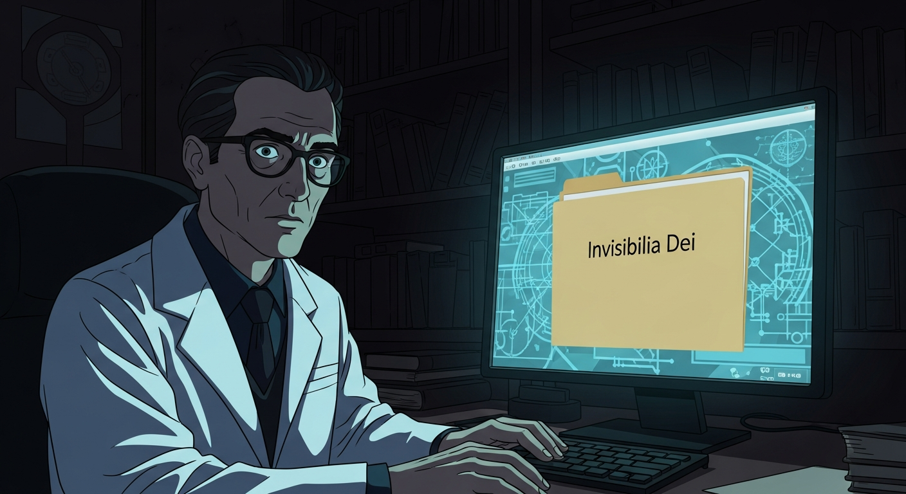
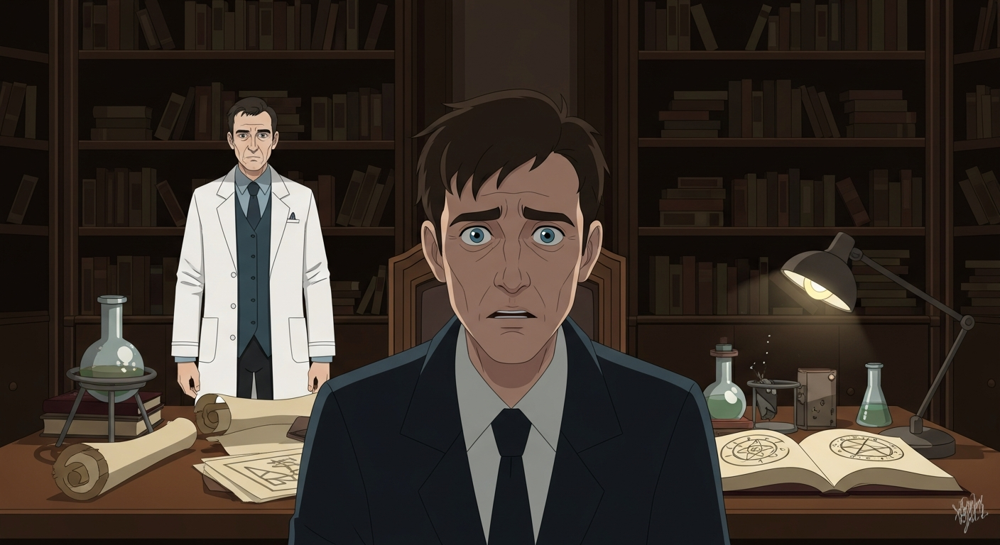

Growing up, *Arthur C. Clarke's Mysterious World* fueled my enchantment. Skepticism took root, but the awe remained. Inside, an inscription—Agrippa, a lost volume, 'The Alchemist's Last Secret'. It whispered of corrupting power, echoing *Evil Dead* and the *Picatrix*. Tradition is not blind faith, but critically investigated. I had to know more.

To chase Dee, I needed help with Invisibilia Dei. Alexander F. was my guy. We found the library, half-expecting dust and silence. Instead, Agrippa. Not *him*, but a projection, warning us about the Secret. Some knowledge, like the Picatrix’s cat beheadings, is best left in the texts. Investigation, not blind faith, remember?